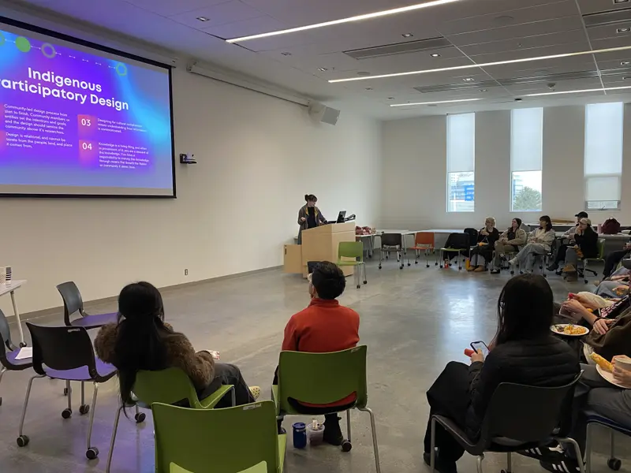

About

I’m an interdisciplinary designer working across participatory design, conceptual design and storytelling. I design in relation to real places, people and systems.
My Master of Design thesis, Playful Knowings, returned to my home community, Fisher River Cree Nation (Ochekwi-Sipi) in Manitoba, for multi-season fieldwork, Elder interviews and participatory design workshops that invited members to redesign everyday objects around their own sense of joy. The research reframed Indigenous playfulness as political rather than incidental: embodied, disruptive and decolonizing. It used that framing to define six characteristics for an Indigenous gathering place, culminating in conceptual drawings for a proposed space on reserve.
That project, âniskômohcikewin, remains a touchstone in my practice, alongside other explorations of play as a design method: an embodied animation storyboarding workshop built on puppetry, dance and improvisation, a prototyped choose-your-own-adventure storytelling app for children and a performance background in improv and tabletop RPGs.
I currently work in knowledge mobilization for Indigenous data governance, carrying the same participatory, community-led methods into my ongoing work in film and design research.
I work in relation, with a methodical and intentional practice that follows teachings from Indigenous communities, collectives and organizations, as well as my own. I am a member of Fisher River Cree Nation in Treaty 5 territory, with deep roots in my Northern Franco-Ontarian and Québécois family.
How I work
Designing with people
I stay close to real contexts and adapt as projects evolve.
Approachability
I aim to be easy to work with and attentive to how collaboration feels, especially in community settings.
Rigour without rigidity
Clear process, care and follow-through without over-controlling outcomes.
Respect for agency
Participation is always invitational, with multiple ways to engage at different comfort levels.
Bridging worlds
Between research and making, seriousness and play, history and possibility: translating without flattening.
Care over authority
I lead through listening and presence rather than posturing as the expert in the room.

Workshops, talks and classrooms
I speak and facilitate on participatory and community-led design, play as a design method, embodied storytelling and placemaking with Indigenous communities. I’m less interested in telling people what to do than in creating a room where people can try something together.
- Master of Interdisciplinary Design, Emily Carr University of Art + Design, Vancouver
- Aboriginal Visual Arts, New Brunswick College of Craft and Design
- Best Sport Story, Quebec Community Newspapers Association (The Nation)